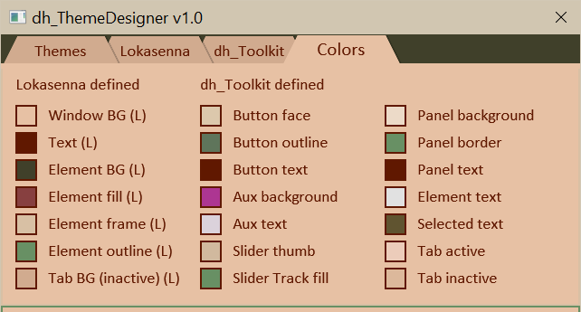

A theme is a collection of colors to be used by a script's GUI. The colors are meant to provide a pleasing and coherent experience. Within the theme are groups (sub-themes) of colors meant to be used together. The most basic is 'wnd_bg' and 'txt'. Although meant primarily to color the script window and the text placed on it, they may be used to color an unfilled panel.
The Colors tab displays the theme colors. Clicking on a color swatch updates the Toolbar section. See section "3.06 Colors Default Uses" for more details of default color uses.
The "Lokasenna defined" column shows the original Lokasenna defined GUI colors.
The "dh_Toolkit defined" columns show the additional colors defined by dh_Toolkit. The Lokasenna colors work fine for a monochrome theme, but I find that it lacks the necessary range when using colored themes. Most of these additional colors are meant to be used for a specific purpose, e.g., "Track fill" for slider track fill. They can, however, be used elsewhere. Some colors, such as "Button face", are used by multiple classes.
"Button face", "Button outline", and "Button text" were originally intended to style the button colors. They are also to color attributes of other classes such as button face is also used for knob face, slider thumb, and scrollbar track.
"aux_bg" and "aux_text" are included as an alternative 'sub-theme'. They may be used to color buttons (and maybe knobs and slider thumbs) when the backdrop color doesn't provide the proper contrast. As of 03-15-2026 I haven't found a need for them. I consider them experimental and I am thinking of maybe eliminating them.
"Slider Thumb" is used to style the slider's thumb color. I have sometimes found that using the button face color wasn't sufficient so I gave it a dedicated color.
"Track_fill" is used to style the track fill color of the Slider element.
"Panel background", "Panel border", and "Panel text" can be used for panels and option boxes (and sometimes slider background) to add an extra level of interest to the GUI.
"Element text" is used for the text elements: dh_Listbox, dh_Menubox, dh_Textbox, and dh_TextEditor. It is necessary because the text elements, by default, have a dark background and require a light text color. It should always provide a good contrast with the background.
"Selected text" is used to highlight the selected text of dh_Listbox, dh_Textbox, and dh_TextEditor. This is the only color in which the alpha value can be adjusted. Do this by using the "sel_alpha" slider on tab3. For a more detailed explanation see 3.08 Selected Text Highlights.
"Tab_active" and "Tab_inactive" is used to style the tab colors of the Tab element.
"Element active" is used
for outlining focused elements when they are selected by clicking
on them or tabbing to them. It requires a high contrast with
the background color. The default "elm_fill" is insufficient in many cases.
The dh_Toolkit classes have the property "allow_sel_outline" to allow the outline.
By default it is set to false, except for dh_Textbox and dh_TextEditor which benefit
from the visual cue that the element is selected and ready for editing.
Although it doesn't appear on the 'Colors' tab it can still be
accessed (as are all the colors) from the 'Color Uses' menubox
in the 'Tool' panel.
Note: As of 2026-02-04 tabbing is not implemented although the Lokasenna
GUI appears to have provisions for tabbing.
"metadata" is a phantom color. It doesn't appear in the GUI. It's purpose is to pass theme data to the GUI. As of 04-17-2026 its alpha value is used to tell the GUI to alwyays use outlines instead of the default highlighted frames.
----------------------------------------------------------- dh_Toolkit Color Name: Lokasenna Counterpart: ----------------------------------------------------------- Button face (btn_face) Elm frame (elm_frame) Button text (btn_txt) Text (txt) Button outline (btn_outline) Elm outline (elm_oultine) Element active (elm_active) Elm fill (elm_fill) Element text (elm_txt) Text (txt) Panel background (panel_bg) Elm frame (elm_frame) Panel border (panel_border) Elm frame (elm_frame) Panel text (panel_txt) Text (txt) Selected text (sel_txt) Elm fill (elm_fill) Tab_active (tab_active) Window BG (wnd_bg) Tab_inactive (tab_inactive) Tab BG (tab_bg) Track_fill (track_fill) Elm fill (elm_fill) -----------------------------------------------------------